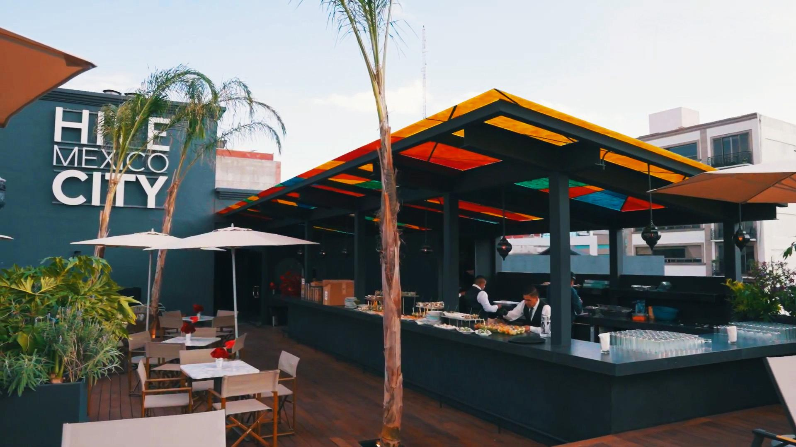

Con una gran celebración, se llevó a cabo la inauguración oficial del Hive Mexico City Smart Boutique Hotel, la segunda propiedad del grupo G Hoteles, liderado por Alex Guindi. Ubicado en el corazón de la icónica colonia Nápoles, este hotel llega con una propuesta innovadora en la que convergen lujo, historia, arte y gastronomía.
Aunque el hotel ya operaba desde hace seis meses, fue hasta ahora que se realizó la apertura oficial con el tradicional corte de listón. Al evento asistieron miembros del equipo, socios, amigos, periodistas especializados y destacadas personalidades del mundo del espectáculo y del turismo en México.
Un hotel que va más allá del hospedaje. Durante la inauguración, Alex Guindi, CEO de G Hoteles, destacó la visión del proyecto: “Se trata de una infraestructura de vanguardia que no solo es un espacio para hospedarse, sino un destino para descubrir. Es un punto de encuentro para mentes creativas, viajeros audaces y ciudadanos del mundo que buscan algo diferente. Más que un hotel boutique, es un destino cultural y sensorial.”
Hive Mexico City ofrece múltiples atmósferas, desde áreas fitness hasta espacios para el entretenimiento, gastronomía, historia y arte. Es ideal para lunas de miel, viajes familiares, escapadas con amigos o estancias de negocios. Entre sus instalaciones destacan un gimnasio y spa, además de bares y restaurantes que enriquecen la experiencia de los huéspedes.
Un espacio con historia y arte.
El hotel se encuentra en un edificio con 87 años de antigüedad, inaugurado en 1942 y ahora
restaurado completamente. Esta es su tercera renovación total, convirtiéndose en el segundo
hotel de la marca, después del primero en Cancún. Su diseño fusiona influencias del Caribe,
Europa y México.
Además, el hotel alberga una galería de arte con una colección fotográfica de Katherine, quien ha capturado imágenes durante 35 años, brindando una visión única de la vida y el arte.
Al recorrer el hotel, es evidente su concepto único, donde el lujo se combina con una estética europea y francesa, creando una atmósfera sofisticada y envolvente. Cada detalle ha sido cuidadosamente diseñado para ofrecer una experiencia de exclusividad y confort.
Tipos de suites. Hive Mexico City ofrece una variedad de suites adaptadas a distintos estilos y necesidades:
- One Big Bed Suite: Espacio cómodo y privado con cama king size.
- Hot Tub Suite: Incluye jacuzzi privado para una experiencia de lujo.
- Big Luxe Suite: Suite espaciosa con un ambiente sofisticado.
- Double Suite: Con dos camas matrimoniales, ideal para grupos o parejas.
- Terrace Suite: Con terraza privada y vistas espectaculares de la ciudad.
Gastronomía y experiencias únicas.
Los huéspedes pueden disfrutar de una amplia oferta culinaria y de entretenimiento en
los siguientes espacios:
- Speakeasy 1921: Bar clandestino inspirado en la época de la prohibición, con cocteles artesanales y una atmósfera exclusiva.
- Late Check Out: Un bar moderno y cosmopolita, con cocteles innovadores y un ambiente vanguardista.
- Ariela Restaurante: Propuesta gastronómica versátil, que va desde fine dining hasta opciones rápidas de grab & go.
- Medina Rooftop: Espacio con alberca panorámica y un exclusivo menú de comida marroquí.
Amenidades y ubicación privilegiada.
El hotel cuenta con un gimnasio de última generación, incluyendo un Boxing Ring exclusivo, caminadoras, bicicletas de entrenamiento, elípticas, máquinas multifuncionales y más.
Su ubicación es inmejorable: a solo 350 metros del World Trade Center y del Pepsi Center, con fácil acceso a zonas clave de la ciudad como Condesa, Roma, el Auditorio Nacional, Foro Sol, Palacio de los Deportes y el Aeropuerto Internacional de la Ciudad de México.
Con esta innovadora propuesta, Hive Mexico City Smart Boutique Hotel redefine la hospitalidad en la CDMX, ofreciendo un espacio donde el arte, la historia y la tecnología se combinan para crear una experiencia inigualable.
LUJO, INNOVACIÓN, GASTRONOMÍA, ARTE Y CULTURA EN UN SOLO LUGAR, ASÍ ES HIVE MEXICO CITY